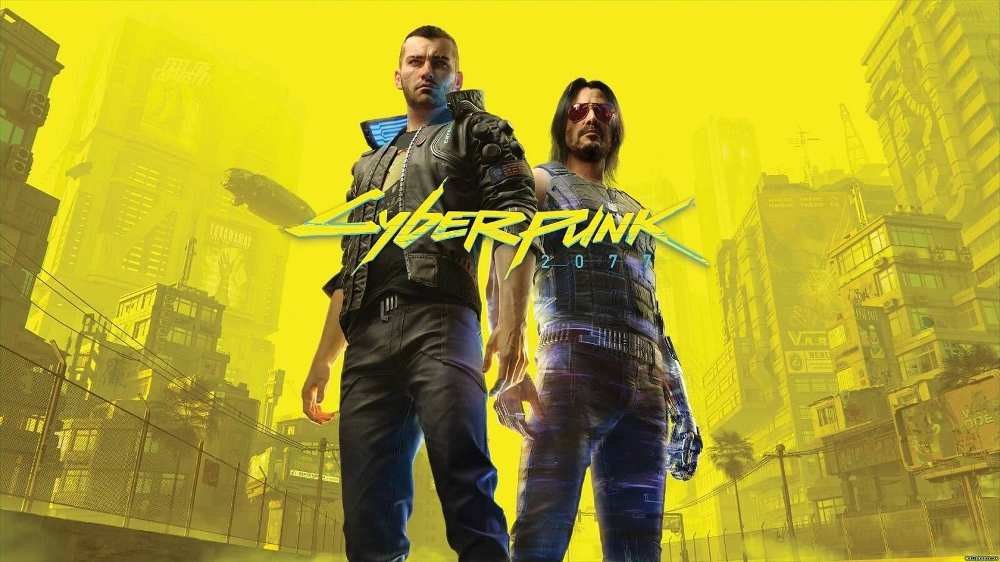
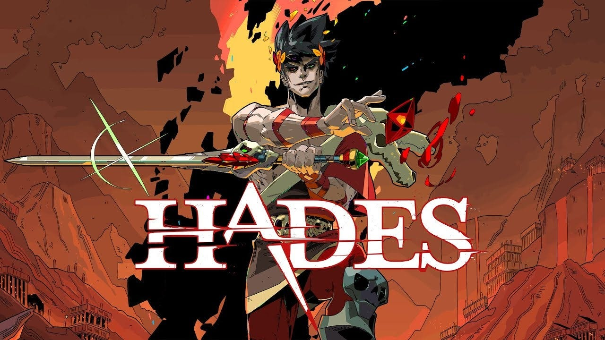
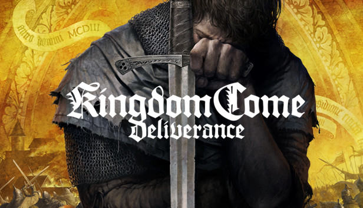

Latest Reviews
Cyberpunk 2077
 9.0/10"A breathtaking dystopian future" Cyberpunk 2077 succeeds in immersing you in a rich, detailed open world: Night City, a place buzzing with life, neon lights, and danger. The main storyline takes you on an emotional rollercoaster, with memorable characters like Johnny Silverhand, brilliantly portrayed by Keanu Reeves, adding depth and intrigue. While its launch was marred by technical issues, CD Projekt Red has since refined the experience, delivering a polished game with diverse missions, extensive customization, and adrenaline-fueled combat mechanics. If you're a fan of complex sci-fi narratives and cyberpunk aesthetics, this game is a must-play.
The Witcher 3: Wild Hunt
 10/10
10/10
"A masterpiece in storytelling and world-building" Few games achieve the level of excellence found in The Witcher 3: Wild Hunt. This action-RPG places you in the boots of Geralt of Rivia, a monster hunter navigating a war-torn, morally complex world. The game boasts a sprawling open world filled with breathtaking landscapes, intriguing characters, and choices that carry meaningful consequences. The narrative is unparalleled, with side quests like "The Bloody Baron" rivaling the quality of the main story. Add to this the addictive card game Gwent, beautifully crafted expansions, and a stunning soundtrack, and you have a title that sets the gold standard for RPGs.
Hades
 9.5/10"A roguelike masterpiece with heart" Hades redefines the roguelike genre, combining fast-paced combat with a deep, emotionally resonant narrative. As Zagreus, the son of Hades, you strive to escape the Underworld, encountering Greek gods and legendary figures along the way. Each attempt at escape feels fresh, thanks to randomized encounters and an arsenal of upgradable weapons. The game’s characters are rich with personality, and the dialogues evolve with your progress, making every interaction meaningful. What truly sets Hades apart is its vibrant art style, impeccable voice acting, and an incredible soundtrack that keeps you engaged in every run. It’s a game that keeps calling you back for “just one more try.”
Doom Eternal
 9/10
9/10
Doom Eternal is a fast-paced, brutal first-person shooter that builds on the success of its 2016 predecessor. With fluid combat, new movement mechanics like grappling hooks and wall climbing, and a variety of weapons, the game encourages constant action and mobility. The visuals are stunning, and Mick Gordon's heavy metal soundtrack perfectly complements the intense gameplay. While the story isn’t the focus, the lore and settings are engaging. The game offers high difficulty levels, secrets to uncover, and a competitive multiplayer mode. Overall, Doom Eternal is a thrilling, action-packed experience and a must-play for shooter fans.
God of War(2018)
 9/10
9/10
God of War (2018) is a critically acclaimed action-adventure game developed by Santa Monica Studio, revitalizing the iconic series with a more mature and introspective tone. The game shifts from Greek mythology to Norse, following Kratos and his son, Atreus, on a journey to scatter his wife’s ashes at the highest peak in the realm. The bond between father and son is central to the story, bringing emotional depth to the action. Combat is revamped with a focus on strategic, close-quarters combat, featuring Kratos’ new weapon, the Leviathan Axe, which can be thrown and recalled, offering satisfying versatility. The game introduces a more open world with RPG elements, allowing players to explore and upgrade their gear, abilities, and powers. Visually, God of War is stunning, with seamless camera work that maintains immersion throughout the journey. The voice acting, especially from Kratos and Atreus, is superb, adding emotional weight to the story. While the game retains its brutal combat, it also emphasizes puzzle-solving and exploration, making it a well-rounded experience. Overall, God of War (2018) is a masterpiece that blends action, storytelling, and exploration, delivering one of the best gaming experiences of the generation. It's a must-play for fans of action games and anyone interested in a rich, narrative-driven adventure.
Kingdom Come: Deliverance
 8.5/10Kingdom Come: Deliverance is an open-world action RPG set in 15th-century Bohemia, offering a historically immersive experience. Developed by Warhorse Studios, the game focuses on realism, featuring detailed swordplay, authentic medieval settings, and a complex narrative. The combat system is skill-based, requiring players to master different sword techniques, blocks, and strikes. The world is vast and meticulously crafted, with a focus on realism in everything from character interactions to how food, sleep, and stamina affect gameplay. Quests are deep, often involving moral choices, and the main story revolves around a young blacksmith’s journey to avenge his family’s death and restore peace. Visually, the game is stunning, with a beautiful recreation of medieval Bohemia, and the soundtrack complements the atmosphere. However, the game’s slow-paced mechanics, lack of fast travel early on, and occasional bugs can be frustrating for some players. Overall, Kingdom Come: Deliverance stands out for its authenticity and immersive world, making it a must-play for fans of history-driven RPGs, though it might be too slow-paced for those seeking a more traditional action experience.
Upcoming Games
Stay tuned for reviews of Elden Ring, Starfield, and more!